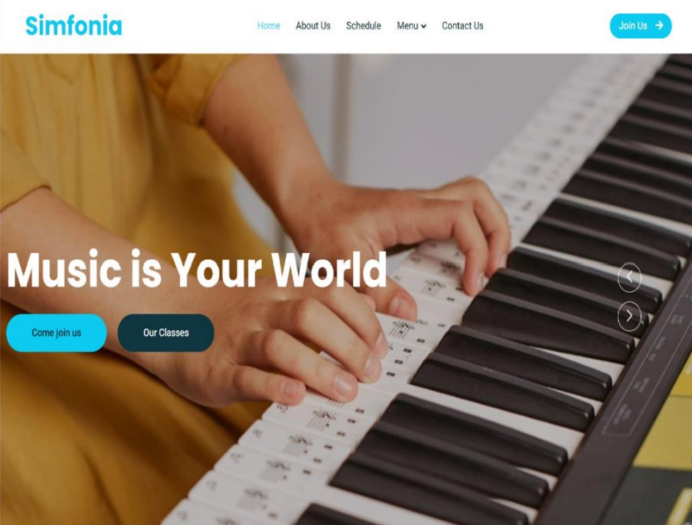
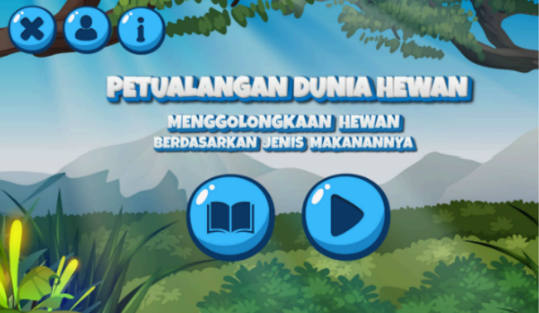

PENGALAMAN
Pengalaman Kerja & Magang
SMKN 3 Surakarta
- Berkomunikasi secara aktif dengan peserta didik dalam mendampingi dan melaksanakan pembelajaran di kelas.
- Merancang dan menyusun perangkat pembelajaran untuk mendukung pelaksanaan pembelajaran Koding dan Kecerdasan Artifisial (KKA) serta Informatika.
- Melaksanakan evaluasi pembelajaran serta memberikan umpan balik untuk mendukung pemahaman siswa.
PT Taspen (Persero) KC Surakarta
- Melakukan pengecekan dan pencocokan informasi peserta antara Microsoft Excel dan aplikasi Andal by Taspen untuk mendukung proses administrasi.
- Merancang dan mempublikasikan konten informasi publik melalui media sosial perusahaan, termasuk materi edukasi mengenai layanan, program, dan kewaspadaan terhadap penipuan.
- Mengelola dokumentasi kegiatan perusahaan serta menyiapkan materi visual publikasi untuk mendukung penyampaian informasi dan aktivitas perusahaan kepada publik.
PORTOFOLIO PROYEK
Karya & Proyek Pilihan

Sistem Informasi Berbasis Web (PHP)
Pengembangan aplikasi berbasis web menggunakan bahasa pemrosesan PHP dan database MySQL untuk mengelola data operasional dan administrasi secara efisien dan terstruktur.

Media Pembelajaran Interaktif
Merancang dan merintis media pembelajaran interaktif berbasis Adobe Animate untuk meningkatkan daya tarik serta pemahaman siswa terhadap materi pembelajaran digital.

Software Testing & Quality Assurance
Pelaksanaan pengujian perangkat lunak, penyusunan Test Case, eksekusi Black Box Testing, serta dokumentasi Bug Report untuk memastikan keandalan fungsi sistem.
LISENSI & KOMPETENSI
Sertifikasi Profesional
Software Quality Assurance
MySkill Indonesia
Pelatihan intensif seputar metodologi pengujian perangkat lunak, perancangan Scenario & Test Cases, eksekusi Manual/Black Box Testing, serta pembuatan laporan kaji Bug Reporting.
Junior Web Programmer
Badan Nasional Sertifikasi Profesi
Sertifikasi kompetensi nasional yang menguji keahlian pemrograman web dasar, struktur algoritma, pengelolaan basis data, serta standar pengembangan perangkat lunak secara profesional.
Pengembangan Aplikasi Digital
Dicoding Academy
Validasi kompetensi dalam merancang, membangun, dan menguji aplikasi digital sesuai dengan standar alur kerja pengembangan perangkat lunak modern.
KOMPETENSI & REKAM JEJAK
Keahlian & Pengalaman Organisasi
Organisasi & Kepanitiaan
Staff Media & Desain
Trash Ranger Indonesia
- Bertanggung jawab dalam membuat berbagai kebutuhan visual untuk mendukung publikasi dan kegiatan Trash Ranger Indonesia.
- Membuat desain untuk konten media sosial, seperti Instagram Story dan Feed, serta menyesuaikan tampilan visual dengan tema dan tujuan setiap kegiatan.
Staff Media & Desain
FKIP / PTIK UNS Surakarta
- Bertanggung jawab dalam perencanaan dan pembuatan rancangan konsep visual, serta mengeksekusi langsung berbagai kebutuhan konten media.
- Berkolaborasi dengan tim untuk memastikan seluruh materi visual tampil menarik, konsisten, dan informatif.